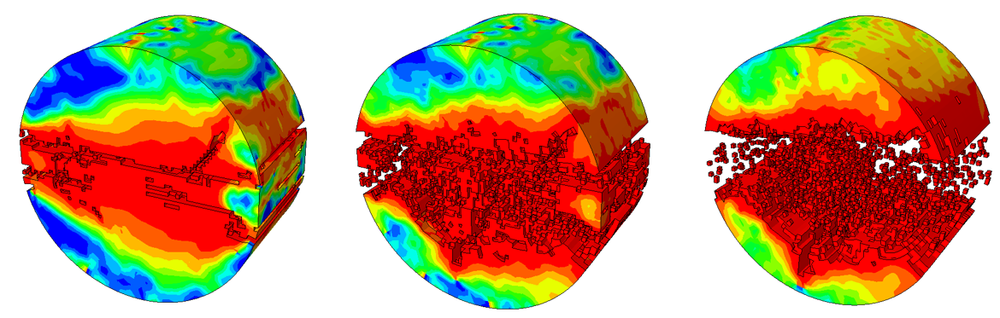
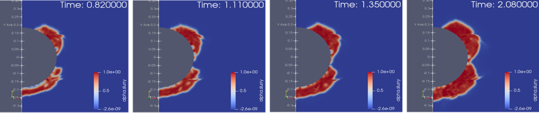

了解我们


欢迎访问智能隧道与工程监测（ITEM）课题组。我们的研究主要聚焦于隧道工程智能防灾减灾相关的理论和技术，如隧道施工智能控制技术、隧道运营动力灾变机理、隧道健康智能评估技术等。目前，课题组正在开展以下研究：
正在开展的科研项目
国家重点研发计划项目 "施工感知与装备作业参数反馈控制的智能建造与多机协同技术" —— 子课题：智能装备障碍识别与避障技术。
项目编号：2023YFB2603904
复杂地质条件下海底盾构隧道灾害的多尺度耦合机制与智能预警（国家自然科学基金项目）。
项目编号：52178385
砂卵石地层盾构同步注浆固-液耦合效应的宏微观机制（国家自然科学基金项目）。
项目编号：51808150
隧道施工过程中土体破坏响应的多尺度建模（广东省自然科学基金项目）。
项目编号：2018A030313132
城市开挖引起的地面响应的智能无线传感网络监测（广州市科技计划项目）。
项目编号：202201020171 和 202102020617